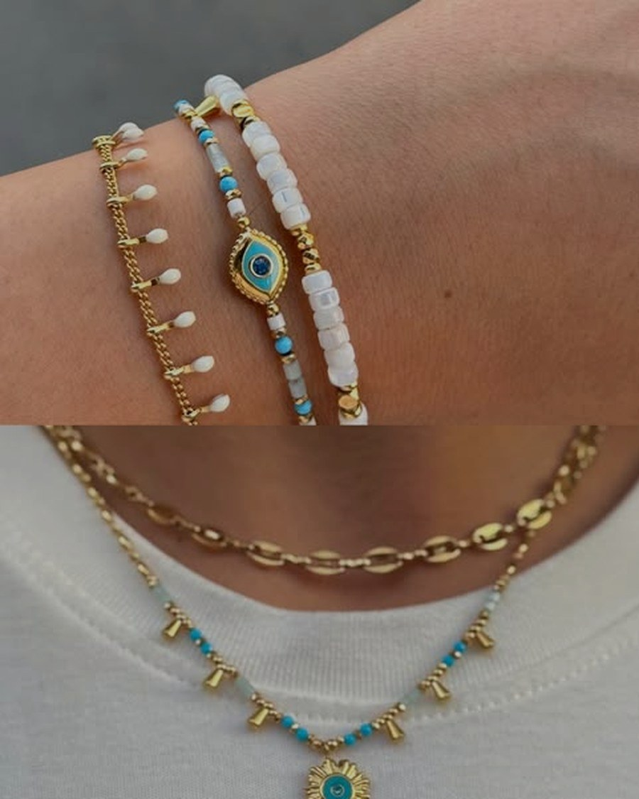
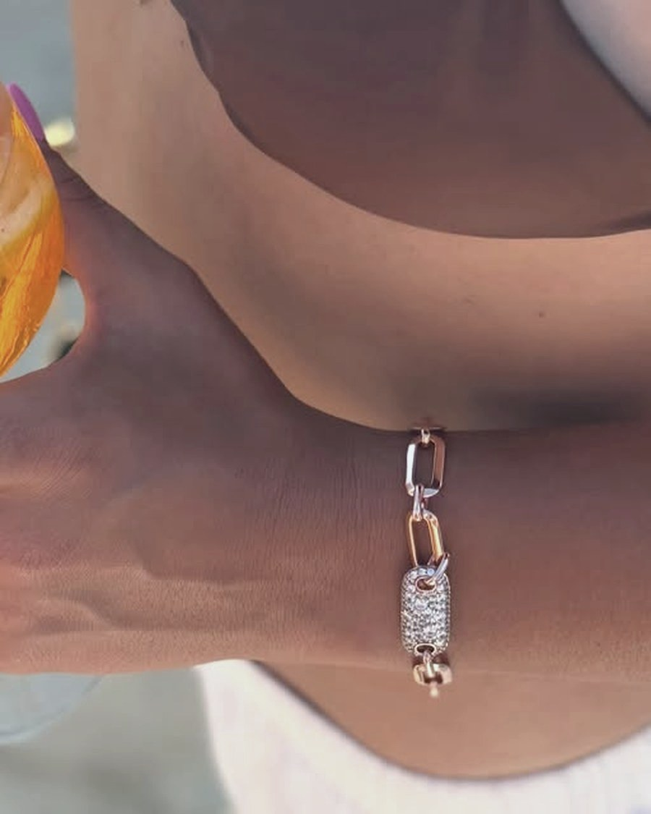

La vetrina
2 pezziCompleta quello che hai

Filo di LuceCreola MediaArgento 925 · 16 mm
28,00 €
chiude Filo di Luce

Filo di LucePendente TurcheseAcciaio dorato e cabochon
26,00 €
chiude Filo di Luce
La tua lista: due pezzi.
Puoi mandarla a chi vuoi tu.
MandalaPuoi mandarla a chi vuoi tu.